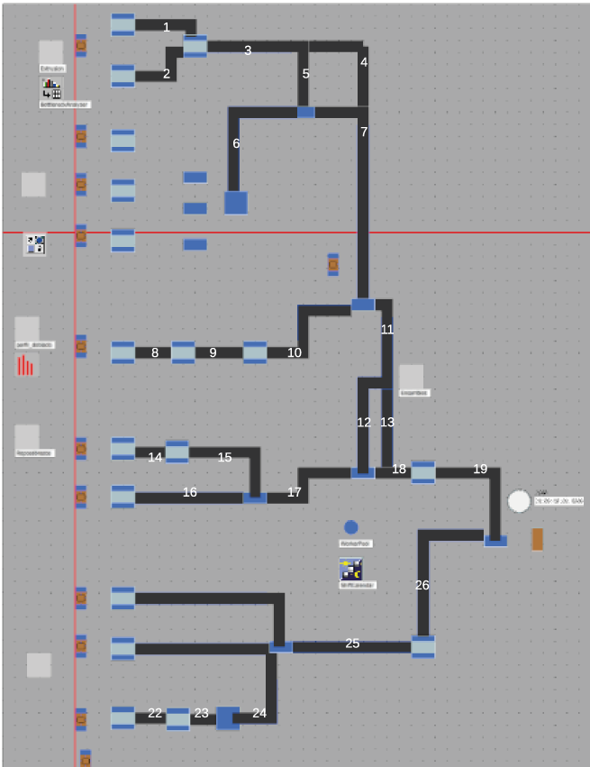

Decidimos escoger como proovedor de los PLC a Rockwell Automation y se concluyó también realizar la programación en Ladder, basada en Grafcet.
Ahora bien, la programación ladder en principio estaría basada en el siguiente layout de la planta

Para el anterior layout se realizó el siguiente Grafcet: